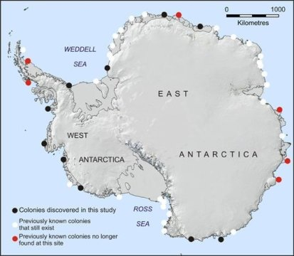
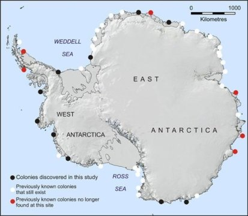

Overview
The Aptenodytes Forsteri, commonly known as the Emperor Penguin, is the largest of all penguin species and lives solely in Antarctica. The sides of the creature are black, along with the back and the head. This sharply contrasts from the white belly and yellow neck that they have. Despite having wings, it is flightless, but can swim extremely well in the frigid antarctic waters. Its diet mostly consists of fish and other small sea creatures it can find, and is the only penguin species to breed during the antarctic winter. They live on the Antarctica coasts in order to find food in the water, but have to venture inland for mating.
 

Taxonomy and Nomenclature
It is one of only two surviving species in the genus Aptenodytes, along with the slightly smaller King Penguin, Aptenodytes Patagonicus. Fossils have been found of Ridgen's Penguin, Aptenodytes Ridgeni in New Zealand, however this species is now extinct.
The Emperor Penguin was given its colloquial name due to its immense size, and being the largest species of penguin in the world. Its scientific genus name came when in 1844, zoologist George Gray created the name from the greek word ἀ-πτηνο-δύτης (a-ptaeno-dytes), meaning "diver without wings". Its species name came from German explorer who accompanied Captain Cook on his voyage, Johann Forster.
Scientific Classification
- Domain: Eukarya
- Kingdom: Animalia
- Phylum: Chordata
- Class: Aves
- Order: Sphenisciformes
- Family: Spheniscidae
- Genus: Aptenodytes
- Species: A. Forsteri